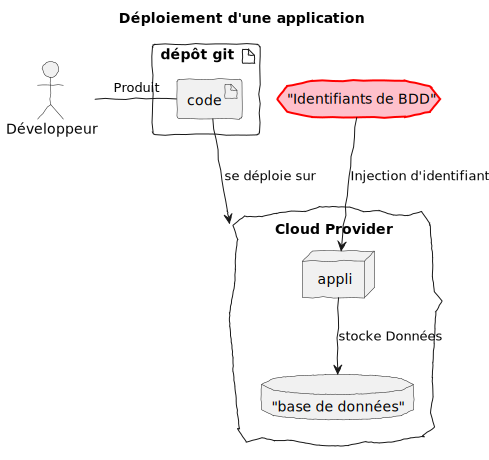
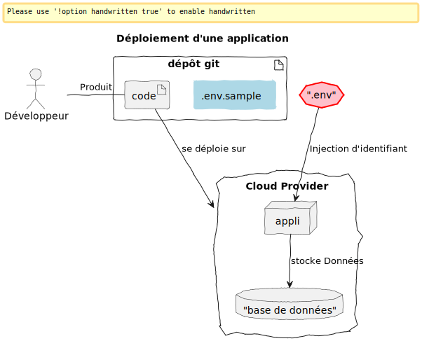

SOPS, passez un savon à vos secrets en clair !
@sylvain_metayer
Cas d’usage
Où persister la valeur des secrets ?


Depuis 2015
Outil auto-suffisant
Types de fichiers :
yaml, json, ini, .env
Exemple
file.yml
password: a secure password for BDXIO !Structure d’un fichier
secrets.yml
password: ENC[AES256_GCM,data:/CsQEvIhylJlqTndyhMEF+PGBJBvTrUedFnEWJc=,iv:N1IkCJHCCoTu2BhpI04XqKwXifZxEOwsnLxou+zWMOc=,tag:wgVUB1utR2QTx2PJ/9fPCg==,type:str]
sops:
age:
- recipient: age16rspnzt6j2qxa2587t6umh9qykrqu2amrr0hx9xt2z7elyky3a3q4p5s7l
enc: |
-----BEGIN AGE ENCRYPTED FILE-----
YWdlLWVuY3J5cHRpb24ub3JnL3YxCi0+IFgyNTUxOSArU3JTUi95ZW1ZS0FsRUt6
dklXOWRuY0k3clRGc2hzcW90UCtvTTRJazFjCkxMNEJYYzE4c1dMYW8wWDNwSk12
clhCK25RbWZzc1laT0Nib1dFVnIyc0EKLS0tIHJCS3Z1Y0ZMWFp1RzdkSG8reE55
NFhQR2VWTFcwMkhoMEpjOUxWbXVCdkEKs+47mS6jYpm5LYlq+NEIOwpqvyLtfsyS
FmyNQh3Ob1CL/1iNaCQsZeFV/k763AIJ4JT6M2hdiQCoVNNJUBwrXw==
-----END AGE ENCRYPTED FILE-----
lastmodified: "2025-10-27T10:19:10Z"
mac: ENC[AES256_GCM,data:6BpvOJZgXgNbViU89934GmG4TNPFcxuxTu6zUxDjWmiKBVGSax2Np9PBKn2uWVx/5CntwGVbVH72tC2EMsH3+l1zt5Pnrc1vhyHlO500Ill2o2pzwflhSywgUDhilAG7pQkFh1u167YlDIXuoEkMTfvp/jPfG29mAtAvBmFrQS0=,iv:EJkhP2jh6ggGaGsuPLakQZREnpQUoV/klcW246Tw9Ok=,tag:1pdQ57yAwaGcZySejETUNg==,type:str]
unencrypted_suffix: _unencrypted
version: 3.11.0Méthodes de chiffrement
Chiffrement avec age[1]
Exemple de clé age
$ age-keygen
# created: 2024-03-08T15:17:28+01:00
# public key: age14trf5fvhkppd8suunru9mg7dkk9r6ndzwc7tnw45yufs2j9h3u9qqwttxu
AGE-SECRET-KEY-1RM9QASYLNVDQ48HDY5ST7RUXX4LFWPR6PTUHUFG7N5RYUG0PNLLSG6D70R1. Mais aussi : AWS KMS, GCP KMS, Azure Key Vault et PGP
Chiffrement d’un nouveau fichier
sops --age \
age14trf5fvhkppd8suunru9mg7dkk9r6ndzwc7tnw45yufs2j9h3u9qqwttxu \
secrets.yamlChiffrement d’un fichier existant
sops -e -i --age \
age14trf5fvhkppd8suunru9mg7dkk9r6ndzwc7tnw45yufs2j9h3u9qqwttxu \
secrets.yamlChiffrement partiel
sops -e -i --encrypted-suffix password --age \
age14trf5fvhkppd8suunru9mg7dkk9r6ndzwc7tnw45yufs2j9h3u9qqwttxu \
secrets.yamlDéchiffrement
export SOPS_AGE_KEY_FILE=/path/to/my/private/key
sops -d secrets.yamlMise à jour
sops secrets.yaml⚠️ | Il est nécessaire d’avoir accès à la clé privée pour éditer le fichier |
Si on veut autre chose que vim
EDITOR="code --wait" sops secrets.yaml💡 | --wait : Wait for the files to be closed before returning. |
Éxecution dans un processus
$ sops exec-env 01-sops-file.yaml 'echo $password'
a secure password for BDXIO !Gestion des destinataires
With sops cli
sops -r -i --add-age PUB_KEY,PUB_KEY2 secrets.yaml
sops -r -i --rm-age PUB_KEY secrets.yaml.sops.yaml
creation_rules:
- path_regex: .*\.?dev\.yaml
encrypted_suffix: 'password'
key_groups:
- age:
- age1pcutm2ytcnn5t2zpj4dvvqhzxw5dcj0gfqplevtev7h8j9hf397s22uacq
- age1248xnnj285mc759u43dv99fzlkgpf82khtm7jzepet70hnz33u2sln6v5a
- path_regex: .*\.?prod\.yaml
key_groups:
- age:
- age1pcutm2ytcnn5t2zpj4dvvqhzxw5dcj0gfqplevtev7h8j9hf397s22uacqDémo
./demo.sh
Pas très lisible tout ça ?
$ git diff 34526..3933
diff --git a/code/recipients/example-diff-secrets.yaml b/code/recipients/example-diff-secrets.yaml
index be346d4..7210f74 100644
--- a/code/recipients/example-diff-secrets.yaml
+++ b/code/recipients/example-diff-secrets.yaml
@@ -1,21 +1,21 @@
-password: ENC[AES256_GCM,data:EuHISKWakII=,iv:1i5ZMWseSJpcZoPdkdhNHaytlapMD5J4MmYJDSjPetA=,tag:SleSVvjR9arBbVIpUeFC5Q==,type:str]
+password: ENC[AES256_GCM,data:RlVe+IAXalyz75NeVqsS64gqRQ==,iv:dq/Yd+25rH2a9pXHYMQ4Qs1qxDPcO5JCIL1TlT+yxG4=,tag:Es0gSsnabjyx4UcHiN91eA==,type:str]
[...]Pas très lisible tout ça ?
$ git config diff.sopsdiffer.textconv "sops -d"
$ cat .gitattributes
code/recipients/example-diff-secrets.yaml diff=sopsdiffer
$ git diff 34526..3933
diff --git a/code/recipients/example-diff-secrets.yaml b/code/recipients/example-diff-secrets.yaml
index be346d4..7210f74 100644
--- a/code/recipients/example-diff-secrets.yaml
+++ b/code/recipients/example-diff-secrets.yaml
@@ -1 +1 @@
-password: password
+password: ThisIsARealPassword